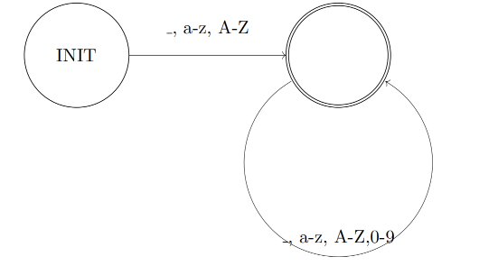
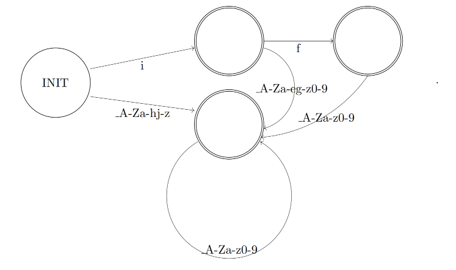
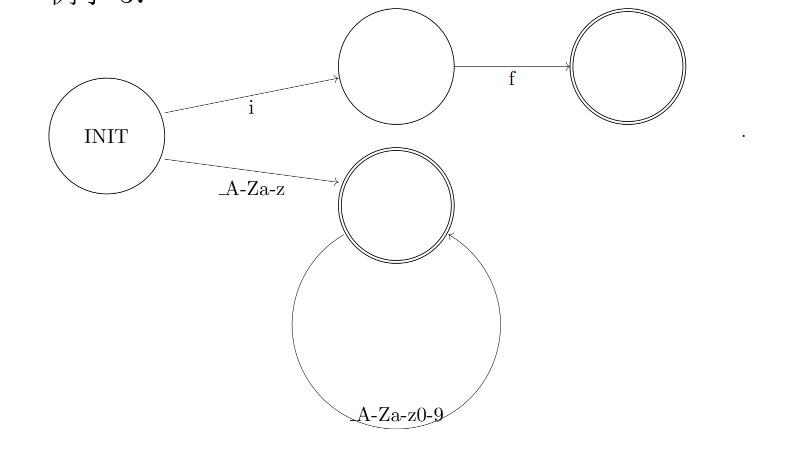
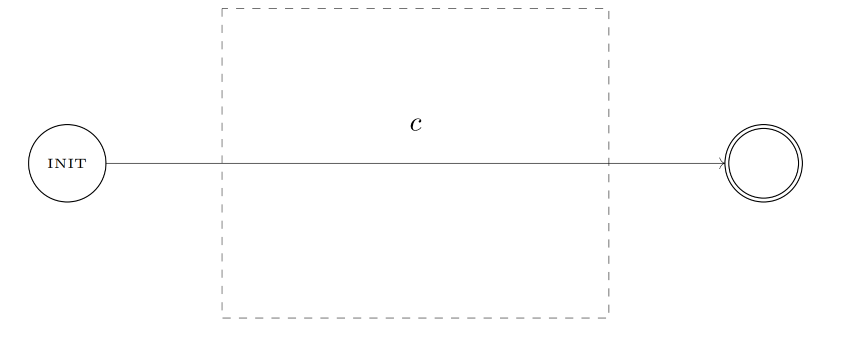
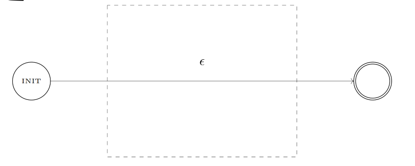
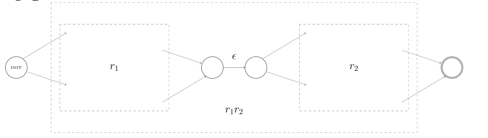
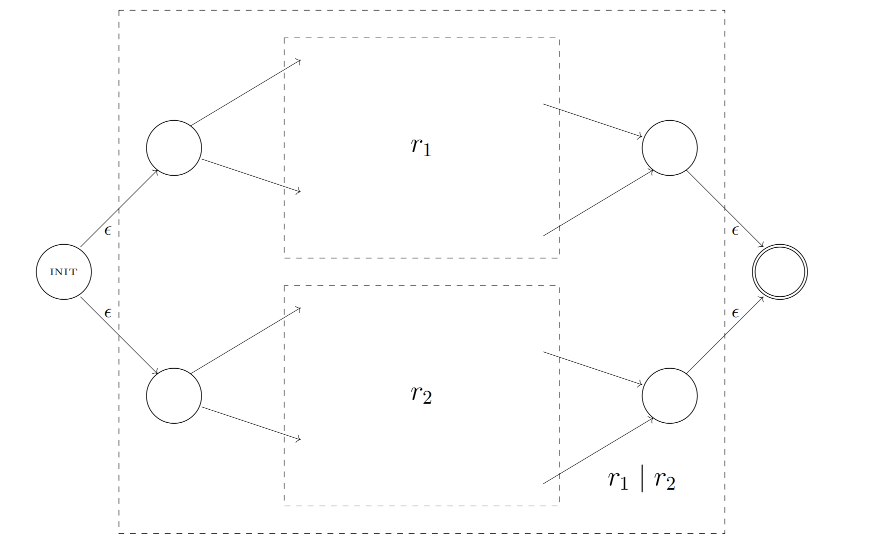
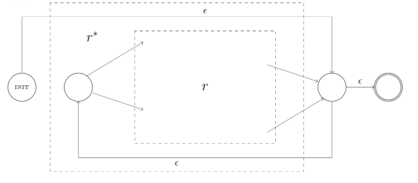
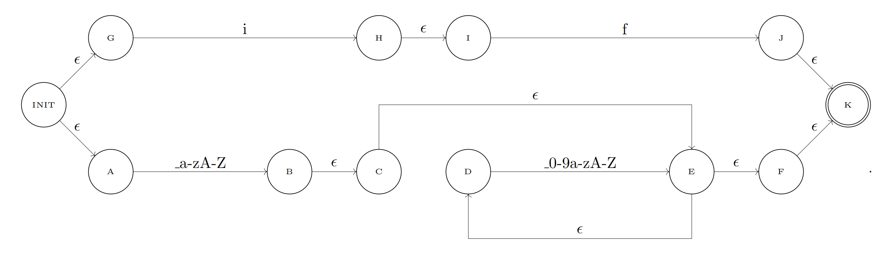
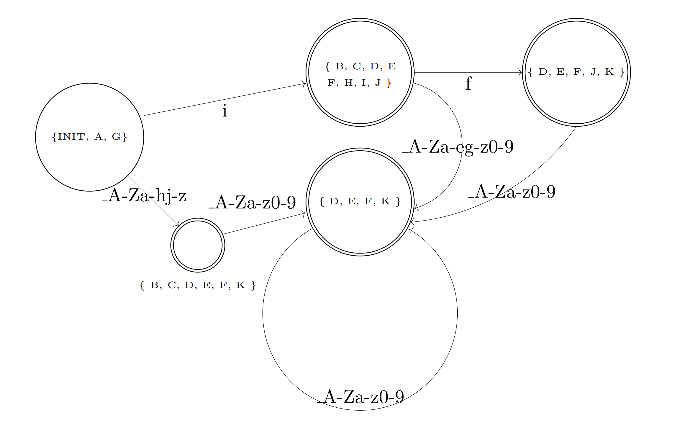

程序语言与编译原理：期末复习
Last updated on December 4, 2025 pm
本文为 SJTU-CS2612 程序语言与编译原理课程的期末复习。
Lecture 1：词法分析
1. 词法分析的基本知识
- 核心任务：词法分析是编译器前端的第一步，它的主要任务是将源代码的字符串切分成一个个有意义的标记 (token)
- 标记的分类：根据标记在语法中承担的功能，可以将它们分为不同的类别，以 While+DB 语言为例
- 运算符：
+ - * / % < <= == != >= > ! && || - 赋值符号：
= - 间隔符：
( ) { } ; - 自然数：
0 1 2 ...（归为一类TOK_NAT） - 变量名：
a0 __x ...（归为一类TOK_IDENT） - 保留字：
var if then else while do - 内置函数名：
malloc read_char read_int write_char write_int - 事实上，在上述标记除了所有自然数分为一类、所有变量名分为一类之外，其他每个标记应当单独分为一类
- 运算符：
1 | |
- 标记的存储:
- 大部分标记（如运算符、保留字）只需要记录它们的类别 (Token Class) 即可
- 一些标记需要存储额外的信息，例如：
- 自然数 (
TOK_NAT)：需要存储它表示的无符号整数值n - 标识符 (
TOK_IDENT)：需要存储它对应的字符串的地址i
- 自然数 (
- 可以使用 union 结构来高效地存储这些额外信息，因为一个 token 不可能既是自然数又是标识符
1 | |
2. 正则表达式 (Regular Expression)
- 定义：正则表达式是一种用来描述字符串集合的语言，它是定义词法分析器匹配规则的基础
- 核心构成与优先级:
- ：单个字符
- ：空字符串
- ：两个字符串的连接
- ：两个字符串的并集
- ：重复出现一类字符串 0 次 1 次或多次
- 优先级：
- 例子：
(a|b)c表达的字符串有ac,bc(a|b)*表达的字符串有空串,a,b,ab,aaaaa,babbb等ab*表达的字符串有a,ab,abb,abbb,abbbb等(ab)*表达的字符串有空串, ab , abab 等
- 常见简写形式：
- 字符的集合：
[a-cA-C]等价于a|b|c|A|B|C - 可选的字符串： 等价于 (出现 0 次或 1 次)，例如
a?b表达的字符串有b,ab - 字符串：例如
"abc"表示字符串abc - 重复至少一次：例如
a+表达的字符串有a,aa,aaa等 - 自然数常量：
"0"|[1-9][0-9]* - 标识符（不排除保留字、内置函数名）：
[_a-zA-Z][_a-zA-Z0-9]*
- 字符的集合：
3. Flex 词法分析工具
Flex 是一个词法分析器生成器，它能自动地将描述标记的规则（正则表达式）转换成一个高效的 C 语言词法分析器。
-
工作流程：
- 输入：一个
.l文件，包含基于正则表达式的词法分析规则 - 生成：运行
flex命令处理.l文件，生成一个 C 语言实现的词法分析器lexer.c，其中包含yylex()函数 - 编译：使用 C 编译器（如
gcc）编译生成的lexer.c和其他业务逻辑代码（如main.c），最终得到一个可执行文件
- 输入：一个
-
输入文件头 (
.l)：- 说明 Flex 生成词法分析器的基本参数
- 指定所生成的词法分析器的文件名
- 词法分析器所需头文件 (
.h文件) 与辅助函数
1
2
3
4
5%option noyywrap yylineno
%option outfile="lexer.c" header -file="lexer.h"
%{
#include "lang.h"
%} -
词法分析用到的辅助函数和全局变量 (
lang.h)：
1 | |
- 词法分析规则：
- 所有词法分析规则都放在一组 %% 中
- 每一条词法分析规则由匹配规则和处理程序两部分构成
- 匹配规则用正则表达式表示
- 处理程序是一段 C 代码
1 | |
-
Flex 专有 C 程序变量：
yytext：指向当前匹配到的字符串的指针yyleng：当前匹配到的字符串的长度
-
Flex 的匹配规则：
- 最长匹配原则：如果有多种切分方案，Flex 会选择匹配尽可能长的字符串的那个规则
- 最先出现规则优先：如果同一种切分方案符合多个词法分析规则（正则表达式），Flex 会选择在
.l文件中最先出现的那个规则- 这个特性常用于处理关键字，将关键字的规则放在通用标识符规则之前
-
词法分析器的使用：
main.c（只打印词法分析结果）yylex()：每次调用返回一个 token
1 | |
- 词法分析全流程：Makefile
1 | |
-
词法分析器的算法流程：
- 先根据输入的字符串找到正则表达式的匹配结果（若有多种结果则选最长、最靠前的）
- 再更新字符串扫描的初始地址，并执行匹配结果对应的处理程序
-
在处理程序中不返回的方案：
- 在规则对应的动作代码中，
return语句会中断yylex()的执行并返回一个 token，下次调用yylex()会从上一次扫描结束的位置继续 - 如果动作代码中没有
return语句，yylex()会在执行完动作后，自动继续进行下一次的词法分析
- 在规则对应的动作代码中，
4. 有限状态自动机
有限状态自动机是识别正则表达式所描述的字符串集合的数学模型。
- 基本概念：
- 有限状态自动机包含一个状态集（图中的节点）与一组状态转移规则（图中的边）
- 每一条状态转移规则上有一个符号
- 状态集中包含一个起始状态，和一组终止状态；起始状态也可能是一个终止状态



-
两类自动机：
- 确定性有限状态自动机 (DFA - Deterministic Finite Automata)：
- 每一条状态转移规则上的符号都是 ascii 码字符。
– 从任何一个状态出发，每个字符至多对应一条状态转移规则
- 每一条状态转移规则上的符号都是 ascii 码字符。
- 非确定性有限状态自动机 (NFA - Nondeterministic Finite Automata)：
- 每一条状态转移规则上的符号要么是 ascii 码字符，要么是
– 从一个状态出发，每个符号可能对应多条状态转移规则
– 通过 转移规则时，不消耗字符串中的字符
- 每一条状态转移规则上的符号要么是 ascii 码字符，要么是
- 确定性有限状态自动机 (DFA - Deterministic Finite Automata)：
-
接受字符串的定义：一个自动机能接受一个字符串，当且仅当存在一种状态转移的方法，可以从自动机的起始状态出发，依次经过这个字符串的所有字符，到达一个终止状态
5. 将正则表达式转化为 NFA
这是将理论（正则表达式）应用到实践（构建词法分析器）的关键步骤之一。
-
对于任何一个正则表达式，都可以构造出一个与之等价的 NFA
- 即一个字符串能被这个 NFA 接受当且仅当这个字符串是正则表达式表示的字符串集合的元素
-
Thompson 构造法：构造方法是递归的，针对正则表达式的五个基本操作进行：
- 为单个字符 构造 NFA

- 为空串 构造 NFA

- 为连接 构造 NFA

- 为并集 构造 NFA

- 为闭包 构造 NFA

-
这些构造出的 NFA 都有一个唯一的起点和一个唯一的终点
- 但是注意：起点也可能在图中有入度，终点也可能在图中有出度
6. 将 NFA 转化为 DFA
这是将理论（正则表达式）应用到实践（构建词法分析器）的关键步骤之一。
-
子集构造法 (Subset Construction)：由于 NFA 的不确定性，在某个时刻它可能处于多个状态的集合中，DFA 的每一个状态就对应 NFA 的一个可能的状态集合
-
步骤：
- DFA 的起始状态是 NFA 起始状态以及所有可以从它通过 转移到达的状态的集合
- 从一个 DFA 状态（即一个 NFA 状态集）开始，计算在接收某一个输入字符后，可以到达的新的 NFA 状态集（同样要包含所有 转移可达的状态），这个新的集合就是 DFA 的一个新状态
- 重复此过程，直到没有新的 DFA 状态产生
- 任何包含 NFA 终止状态的 DFA 状态，都是 DFA 的终止状态
-
例子：
- 正则表达式：
if|[_a-zA-Z][_0-9a-zA-Z]* - NFA：

- 起始状态: { INIT, A, G }
i: { INIT, A, G } { B, C, D, E, F, H, I, K }
f: { B, C, D, E, F, H, I, K } { D, E, F, J, K }
_0-9a-zA-Z: { D, E, F, J, K } { D, E, F, K }
_0-9a-zA-Z: { D, E, F, K } { D, E, F, K }
_0-9a-eg-zA-Z: { B, C, D, E, F, H, I, K } { D, E, F, K }
_a-hj-zA-Z: { INIT, A, G } { B, C, D, E, F, K }
_0-9a-zA-Z: { B, C, D, E, F, K } { D, E, F, K } - 构造生成的 DFA：

- 正则表达式：
Lecture 2：语法分析
Lecture 3：简单编译器
Lecture 4：程序语言语法的 Coq 定义
Lecture 5：表达式指称语义
Lecture 6：利用集合与关系定义指称语义
Lecture 7：霍尔逻辑
Lecture 8：用单子表示计算
1. 单子的定义
- 假设 是一个单子， 是一个集合，表示一类计算结果（或返回值）类型为 的计算
- 单子应配有两个算子：
- bind 算子：表示计算的复合，即 bind：
- return 算子：表示直接返回一个特定值，即 return：
1 | |
Lecture 9：不动点定理
Lecture 10：单子程序上的霍尔逻辑
Lecture 11：分离逻辑
参考资料
本文参考上海交通大学程序语言与编译原理课程 CS2612 曹钦翔老师的讲义，课程网站为 https://jhc.sjtu.edu.cn/public/courses/CS2612/。